ライトを中央面と同じ角度の端面まで伸ばす
使う機能：押し出し
終端の位置と終端面の角度は別の条件です。選んだ面までの範囲は位置を決め、終端面の向きは元の輪郭と平行・選んだ面と平行などを決めます。
ライトから終端平面まで伸びた部品ができる。元面平行と終端面平行を下見で比較する。
1 準備 — 元の図形から作る
閉じたライト輪郭と、中央の平らなフェイスを用意する。
まだ用意できていなければ、次の手順を先に行ってください。既にモデルがある場合も、例の座標・大きさ・面の向きを自分のモデルへ読み替えます。
- 20×10×10mmの箱を作る — 図形の作成から順に練習できます。
- 線・面・部品を取り違えずに選ぶ — 図形の作成から順に練習できます。
練習前にKCD2を別名保存します。数値の長さはmm、角度は度です。平面内のu/vと世界XYZを区別します。
2 使う道具を開く — 押す場所
- 部品 → 作成 → 押し出し
別の入口：Ctrl+K → 押し出しを検索 → 候補の用途を確認して開きます。別モードなら「全モードから探す」をオンにします。
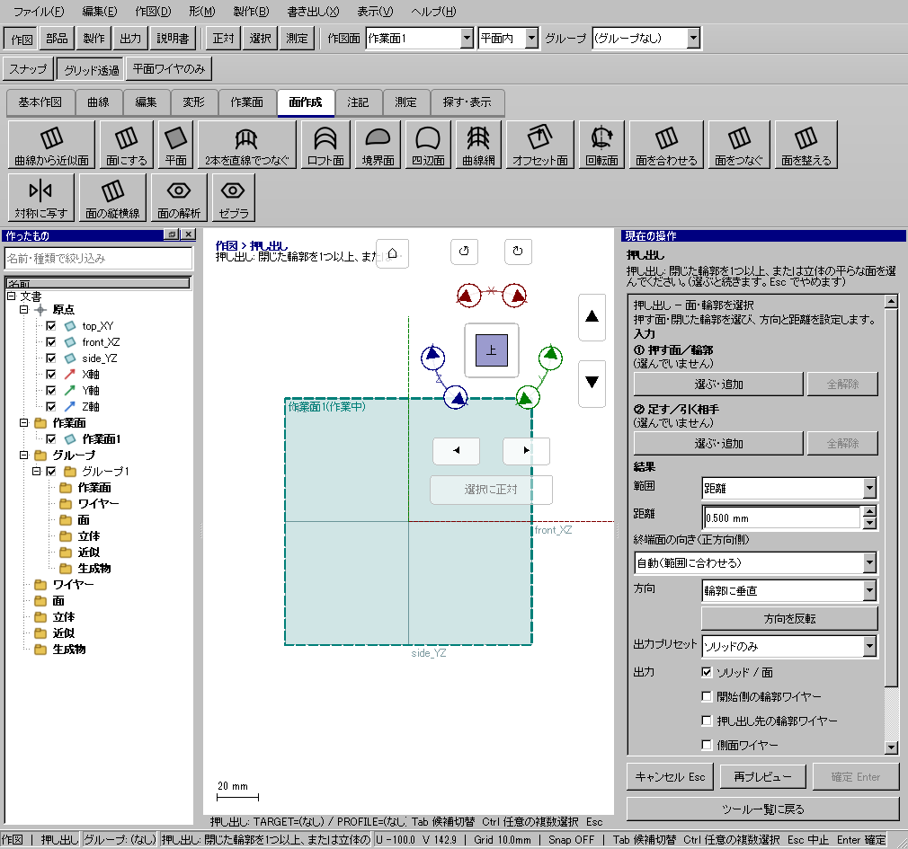
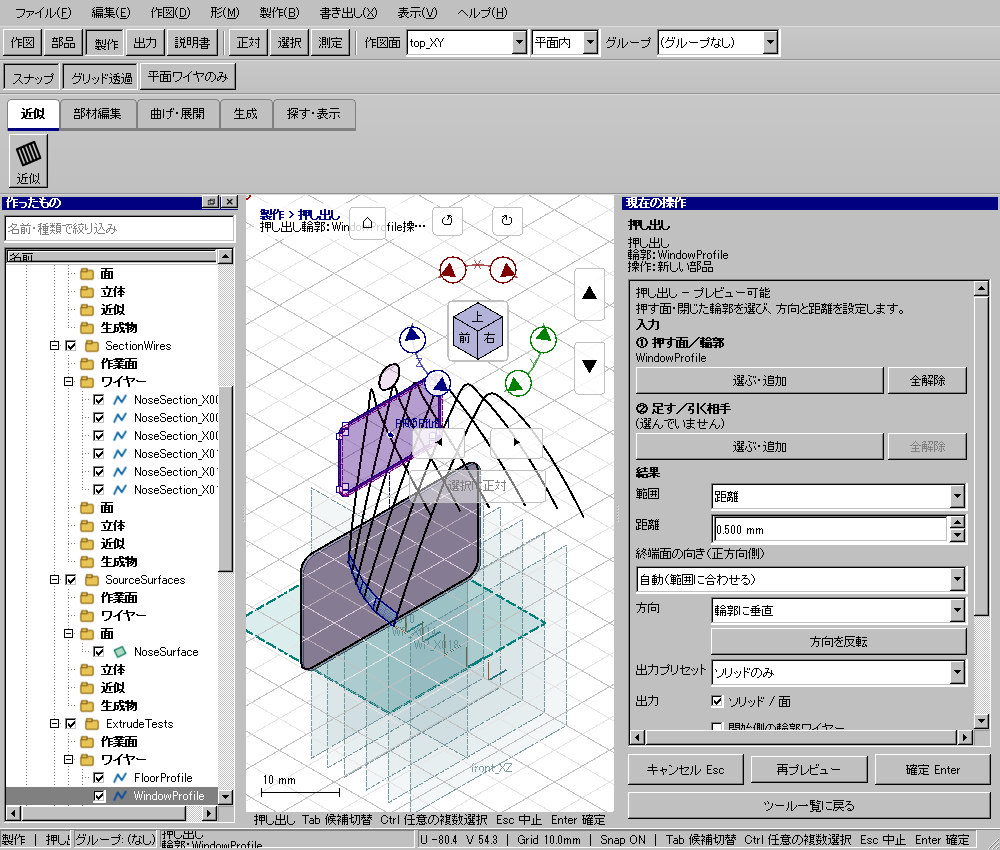
この実画面は既存操作試験の一場面で、下の数値例の完成画像とは限りません。
3 操作手順 — 一つずつ進める
押し出す物を決める
閉じた輪郭、投影した小さな面、またはフェイスを用意します。ライトの例は下の詳細手順を開き、車体全体とライト面を見分けます。
画面で確認：開始面と終端面を別の名前で呼べる状態にします。
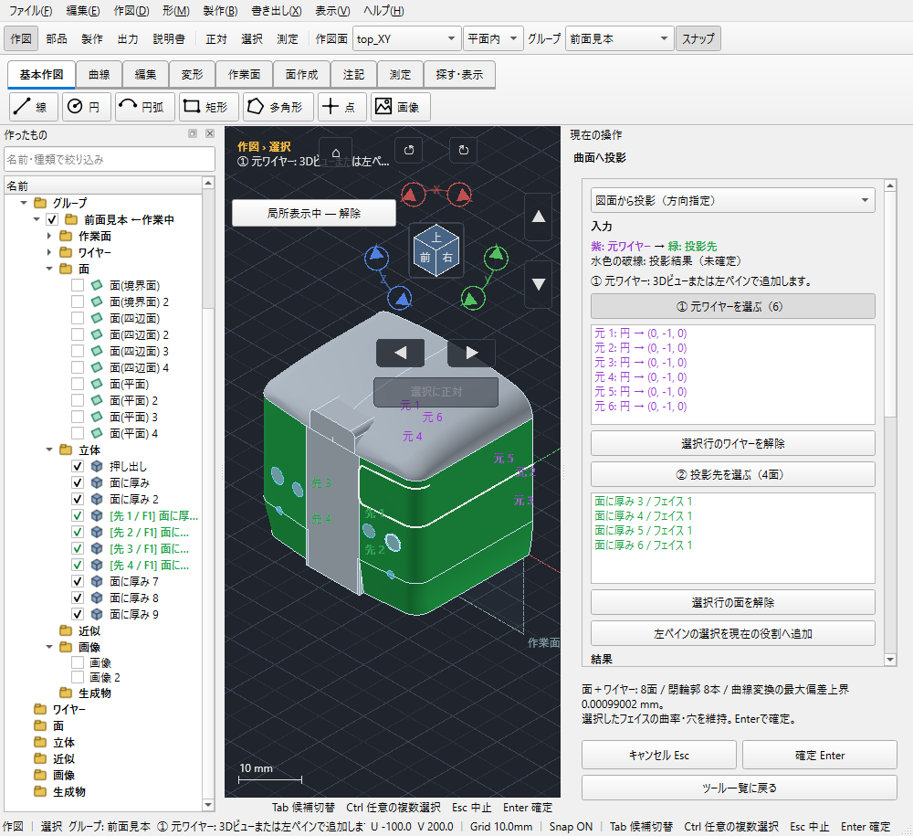
準備：車体へ投影した小さなライト面。 画像を押すと原寸で開きます。 押し出しを開く
「部品 → 作成 → 押し出し」を押します。右ペイン上部の「①押す面／輪郭」の「選ぶ・追加」を押します。
画面で確認：選択待ちの役割が①になります。
開始面を登録する
3Dのライト面の内側、または左一覧の該当要素を押します。候補が重なる場合はホバーとTabで切り替えます。
画面で確認：①にライトの名前が入ります。中央の大きな面ではありません。
新規か加工かを決める
新しいライト部品なら「②足す／引く相手」は空にします。既存車体へ足す・引くときだけ、その相手を②のボタンから選びます。
画面で確認：①と②へ同じ物を誤登録していないことを確認します。
終端位置を決める
距離指定なら「範囲＝距離」で値を入れます。中央面なら「範囲＝選んだ面まで」にし、③の「3Dビューで終端面を選ぶ」を押します。
画面で確認：終端選択中のボタン表示になります。
中央面を選ぶ
目的の平らな面へカーソルを置き、候補の色を見てクリックします。ライトが有限な中央面の外にある場合は「終端の平面を延長して使う」をオンにします。
画面で確認：③に中央フェイス名が入ります。曲面に平面延長は使えません。
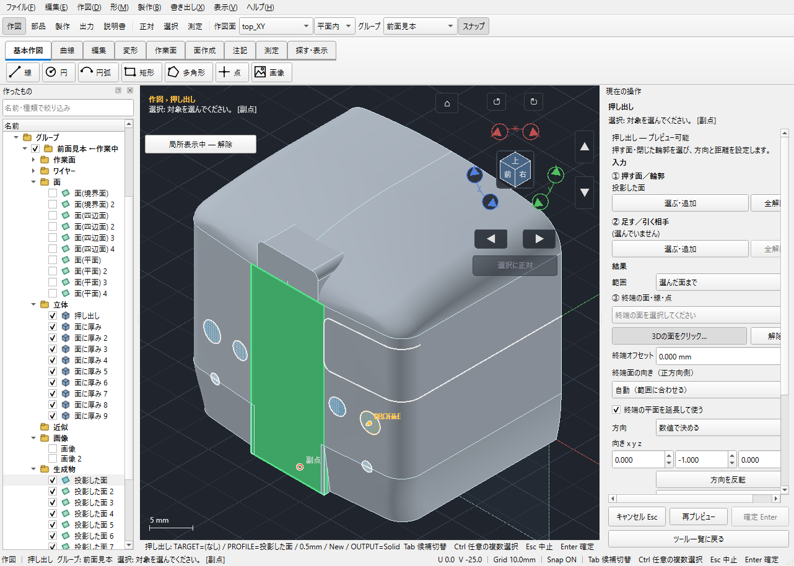
終端選択：中央面を選ぶ役割へ切り替え、候補面を確認します。 画像を押すと原寸で開きます。 伸ばす方向を決める
方向を線にする場合は方向の線を選ぶ役割へ切り替えます。数値なら中央へ向かうベクトルを入れます。115面の詳細例は0,−1,0です。
画面で確認：ライトから中央へ下見が伸びます。別モデルへ数値をそのまま流用しません。
位置と角度を分けて設定する
終端オフセット0なら選んだ位置です。自動（範囲に合わせる）なら選んだ平面に沿う終端になります。別角度なら「選んだ面と平行」にし、向きの基準面を別途選びます。
画面で確認：向きの基準面は角度だけを使い、その面の位置まで移動する設定ではありません。
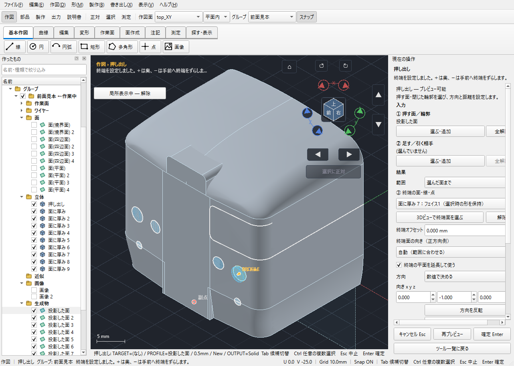
下見：範囲・方向・平面延長を確認した状態。 画像を押すと原寸で開きます。 作る物を選ぶ
「ソリッドのみ」「ワイヤーのみ」「ワイヤー＋ソリッド」を選びます。必要なら開始輪郭・先の輪郭・側面ワイヤーを個別に切り替えます。
画面で確認：ワイヤーだけでは体積のある部品や穴は作れません。
下見を確認して確定する
必要なら再プレビューを押します。開始面、伸びる側、終端角度と出力を見て「確定 Enter」を押します。
画面で確認：結果が一覧へ追加されます。完成後は選択に戻り、元と結果を分けて確認しKCD2へ保存します。
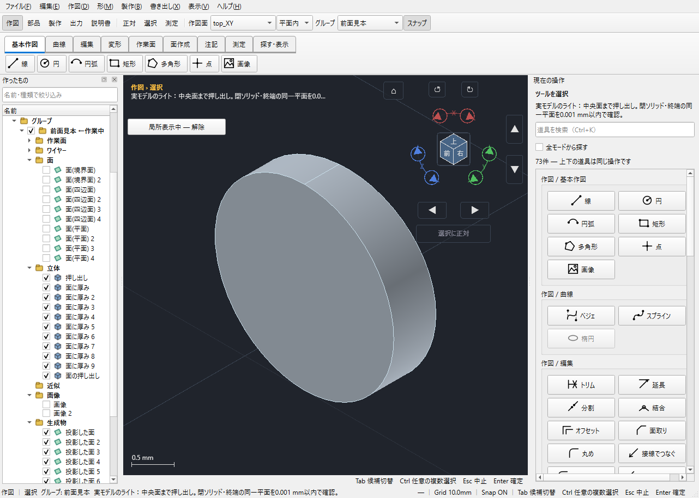
完成形：同じ生成ライトを単独表示した拡大図。 画像を押すと原寸で開きます。


4 設定する欄と数値
ボタン名・欄名と、今回使う値を対応させてください。項目が出ていない場合は作り方・モードが合っているか確認し、ペイン内をスクロールします。
| 見る欄・役割 | この例の設定と意味 |
|---|---|
| ①押す面／輪郭 | ライト |
| ②足す／引く相手 | 新規なら空 |
| ③終端 | 中央フェイス |
| 範囲 | 選んだ面まで |
| 平面延長 | オン |
選択の確認：役割欄の名前と3Dの強調を照合します。重なって拾いにくい時はTabで候補を替えます。全体を使う例では左一覧の要素名を選び、3Dの1辺選択と区別します。
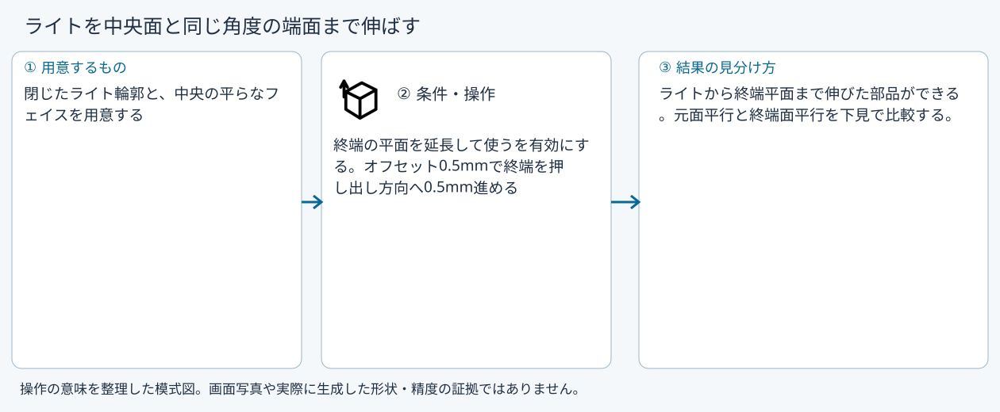
5 確定して結果を確認
必要な入力と数値をそろえ、下見と状態欄を確認して、右ペインの作成・適用・確定ボタンを押します。Enter対応の道具はEnterでも確定できます。
ライトから終端平面まで伸びた部品ができる。元面平行と終端面平行を下見で比較する。
形を作る操作では、元と結果の名前を分けて一覧で確認し、必要に応じて元を一時非表示にします。表示だけの機能では形状や要素数を変えることが目的ではありません。
6 取消・やり直し・保存
Escで未確定の入力を取り消します。道具を終えるには選択（V）か別の道具へ切り替えます。確定済みの図面変更はCtrl+Z、やり直しはCtrl+Yです。
モデルの編集正本はKCD2、説明書の編集正本はKCIです。外部へ出力するだけの機能では、出力ファイルと編集元を両方残してください。
進めない場合 — 症状から戻る場所を探す
| 起きていること | 確認して直す場所 |
|---|---|
| 終端に届かない | 有限フェイスの外なら平面延長を確認。曲面は平面延長不可 |
| 別角度の面を選んだ | 向きの基準は方向だけで、終端位置は別設定 |
この機能の入力条件：閉じた輪郭を1つ以上、または立体の平らな面を選んでください。
計算中は処理表示を見ます。失敗が出たら、対象・入力条件を変えずに何度も押すのでなく、案内にある対象と条件を確認します。
別の方式・条件で使う
距離
まず主手順で入力の役割を確認し、この例の値と操作へ置き換えます。
この例の準備：閉じた矩形
範囲を距離にし5mmを入れます。方向を輪郭に垂直などから選び、反転前後の下見を比べます。終端位置を決めるための面選択は不要です。
- 輪郭欄へ追加
- 距離5mm
- 方向
- 下見
- Enter
結果の見分け方：5mm伸びた部品
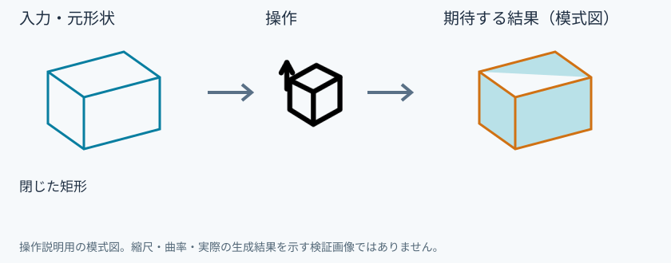
中央面まで
まず主手順で入力の役割を確認し、この例の値と操作へ置き換えます。
この例の準備：ライト輪郭と中央の平らなフェイス
ライトは①、中央面は③へ指定します。115面の向きは0,−1,0ですが他モデルは向きを読み替えます。有限な平面の外なら平面延長をオンにします。
- 輪郭欄へライト
- 選んだ面まで
- 終端を3Dで選択
- 平面を延長して使う
- 方向を中央へ
- Enter
結果の見分け方：終端の平面まで伸びる
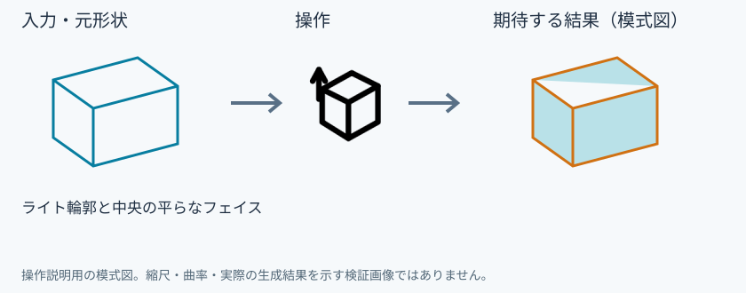
終端をずらす
まず主手順で入力の役割を確認し、この例の値と操作へ置き換えます。
この例の準備：終端面を選択済み
オフセットは押し出し方向に沿う距離です。+0.5なら終端からさらにその方向へ、−0.5なら手前へずらします。面の法線距離と同じとは限りません。
- 終端オフセット0.5mm
- 下見
- Enter
結果の見分け方：終端を押し出し方向へ0.5mm延ばす
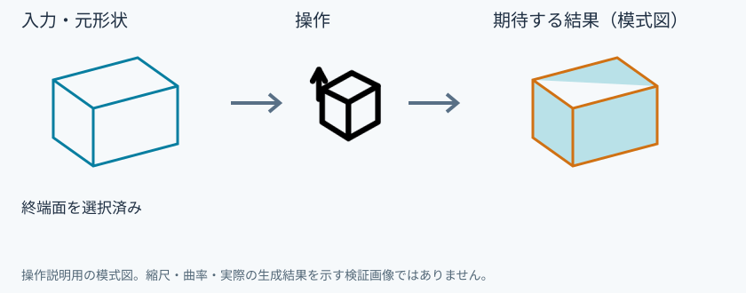
元面と同じ向き
まず主手順で入力の役割を確認し、この例の値と操作へ置き換えます。
この例の準備：閉じた平面輪郭
終端の向きで元面と同じを選びます。元の平面輪郭と平行な端面です。開始輪郭が非平面の場合に同じ条件が一意に決まるとは考えず、状態表示を確認します。
- 終端の向き:元面と同じ
- 距離5mm
- 下見
- Enter
結果の見分け方：始端に平行な終端
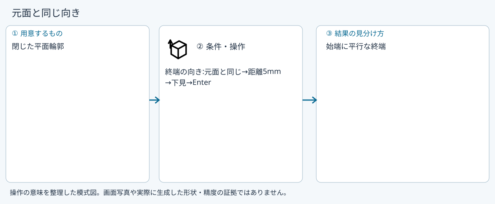
選んだ面と平行
まず主手順で入力の役割を確認し、この例の値と操作へ置き換えます。
この例の準備：輪郭と傾いた平面フェイス
向きの基準面を選ぶボタンで平面フェイスを選びます。保存するのは方向で、その面の位置までは伸びません。位置は範囲と距離／終端指定で決めます。
- 終端の向き:選んだ面と平行
- 参照面を指定
- 下見
- Enter
結果の見分け方：選んだ角度に平行な終端
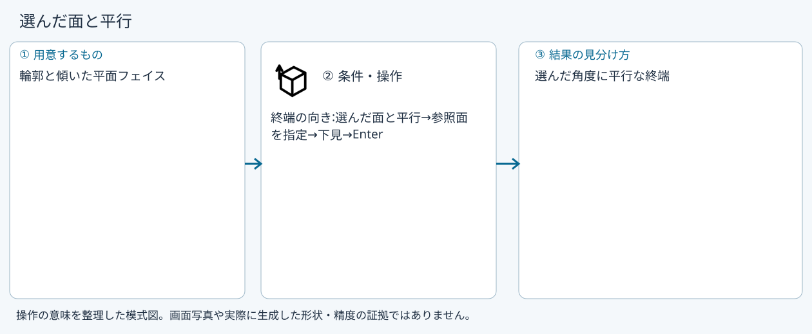
角度入力
まず主手順で入力の役割を確認し、この例の値と操作へ置き換えます。
この例の準備：閉じた輪郭
角度入力の種類へ切替し欄の角度を指定します。下見でどちらの軸へ傾くかを確認します。距離だけでは角度は変わりません。
- 終端の向き:角度入力
- 角度を入力
- 下見
- Enter
結果の見分け方：指定角度の終端
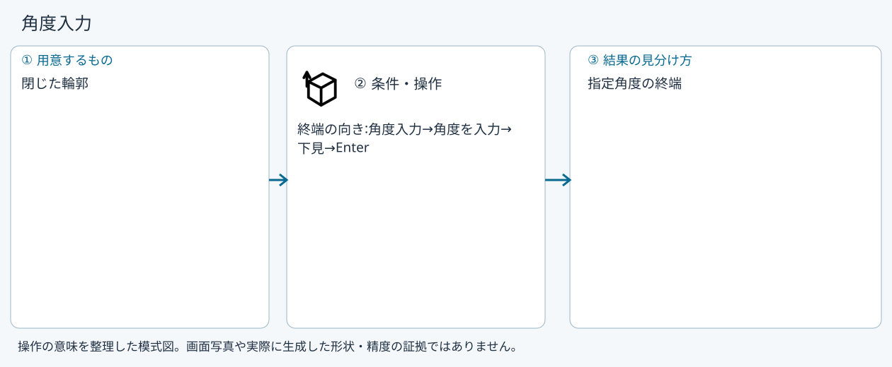
ワイヤーのみ
まず主手順で入力の役割を確認し、この例の値と操作へ置き換えます。
この例の準備：閉じた輪郭
出力をワイヤーのみにし、必要な開始輪郭・先の輪郭・側面線をチェックします。図面へ線は増えますが、体積を作る新部品は増えません。
- 距離5mm
- 出力ワイヤーのみ
- 下見
- Enter
結果の見分け方：始端・終端・側面線を指定に応じて生成
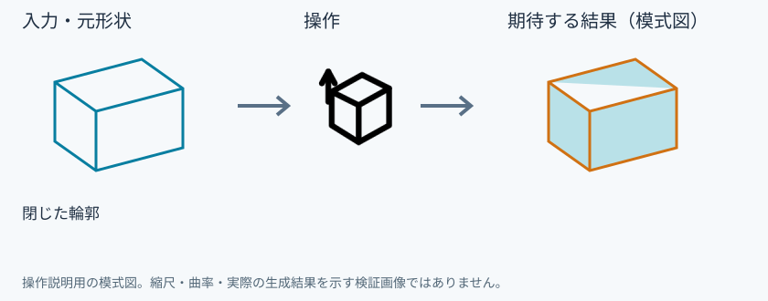
参考画面の出典と確認範囲
試験名：HP-HEAVY 非表示の押し出し輪郭を開き直す。試験全体の結果：passed。画像はコマンド呼出し直後で、入力待ち・下見の場合もあります。各段階の完成証拠ではありません。